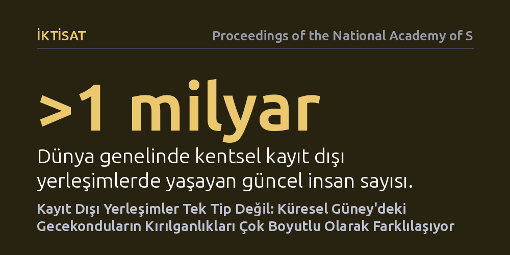

IKTISAT · Proceedings of the National Academy of Sciences · 2026-10-24
Araştırmacılar, Küresel Güney'deki kayıt dışı yerleşimlerin sürdürülebilir kalkınma önündeki çok boyutlu kırılganlıklarını inceledi. Çalışma, bir milyardan fazla insanın yaşadığı bu yerleşimlerin homojen olmadığını ve her bölgenin farklı çevresel, altyapısal ile sosyoekonomik risklerle karşılaştığını ortaya koydu.
Kayıt dışı yerleşimleri tek tip bir yoksulluk alanı olarak görmek yerine, her yerleşimin kendine has çok boyutlu kırılganlıklarına göre farklı kentsel politikalar geliştirilmesi gerektiğini gösteriyor.

Dünyada bugün bir milyardan fazla insan kentsel kayıt dışı yerleşimlerde, yaygın adıyla gecekondularda ya da enformel mahallelerde yaşamını sürdürüyor. Hızlı kentleşmeyle birlikte bu nüfusun 2050 yılına kadar neredeyse üçe katlanması öngörülüyor. Buna karşın kamu politikaları ve küresel kalkınma programları, bu alanları çoğu zaman homojen, yani her yerde aynı sorunları yaşayan tek bir "gecekondu" kategorisi olarak ele alma eğiliminde.
Oysa her kayıt dışı yerleşim aynı zorluklarla karşılaşmıyor. Kimi mahalleler sel, heyelan veya aşırı sıcak gibi çevresel afetlerin doğrudan tehdidi altındayken, kimileri temiz içme suyu, kanalizasyon ve elektrik gibi temel altyapı yoksunluğundan, kimileri ise mülkiyet güvencesizliğinden etkileniyor. Bu çalışma, sürdürülebilir kalkınmanın önündeki en büyük engellerden biri olan bu yerleşimlerin tek tip olmadığını ve taşıdıkları kırılganlıkların çok boyutlu yapısını ortaya koymayı amaçlıyor.
Araştırmacılar, Küresel Güney kentlerindeki kayıt dışı yerleşimlerin karmaşık yapısını çözümlemek amacıyla yüksek çözünürlüklü uydu görüntülerinden ve uzaktan algılama tekniklerinden yararlandı. Binaların yerleşim yoğunluğu, çatı dokuları ve sokak dokularının geometrik özelliklerini sayısal olarak modelleyen görüntü işleme yöntemleri kullanıldı.
Elde edilen bu morfolojik veriler; topoğrafik eğim, taşkın riskleri ve kentsel altyapı hizmetlerine erişim gibi mekânsal göstergelerle bir araya getirildi. Böylece çalışma, sadece binaların fiziksel varlığını tespit etmekle kalmayıp, o yerleşimlerde yaşayan toplulukların karşı karşıya olduğu farklı tehlike türlerini kapsayan geniş ölçekli bir gözlemsel sınıflandırma sundu.
Araştırmanın temel bulgusu, kayıt dışı yerleşimlerin tek bir kalıba sığdırılamayacak kadar heterojen bir yapıya sahip olduğudur. Farklı ülkelerdeki ve hatta aynı metropol içindeki farklı enformel mahallelerin maruz kaldığı kırılganlık türleri belirgin şekilde ayrışıyor. Bazı bölgelerde birincil sorun iklim olaylarına açıklıkken, diğer bölgelerde temel kamu hizmetlerinden yoksunluk ya da sosyal dışlanma çok daha baskın çıkıyor.
Elde edilen sonuçlar, hızla büyüyen kentlerde bu çok boyutlu risk profilinin zaman içinde daha da katmanlı hale geldiğini gösteriyor. Bu nedenle, tüm kayıt dışı yerleşimleri tek bir yoksulluk tanımına hapseden yaklaşımlar, en acil müdahaleye ihtiyaç duyan alanların gözden kaçmasına yol açabiliyor.
Bu bulgular, kentsel dönüşüm ve kalkınma programlarının kurgulanış biçimini kökten değiştirmeyi gerektiriyor. Tüm gecekondulara aynı standart altyapı paketini uygulamak veya toptancı tasfiye projelerine girişmek yerine, her yerleşimin kendine özgü kırılganlık profiline yanıt veren hedefli müdahalelere ihtiyaç bulunuyor.
2050 yılına doğru hızla genişleyen kentlerde kamu bütçelerinin ve kaynaklarının doğru yönetilmesi hayati önem taşıyor. Kırılganlıkların boyutlarını ayrıştırabilmek, karar vericilere iklim uyumu, altyapı yatırımı veya mülkiyet hakkı güvencesi gibi adımları doğru öncelikle doğru mahallelere ulaştırma imkânı sunuyor.